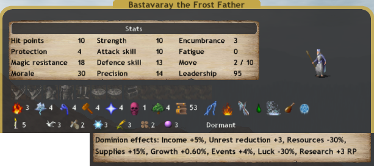

Awake/Dormant Builds
There are many reasons to go with a pretender who is not imprisonned.
The first and most obvious is to have him conquer indies and get a lot of land early on in the game.
Another is to have a very strong commander that can break into paths and kill armies alone.
Another is a multi-pathed wizard that can help with research and search an incredible variety of sites.
E6N2 Great White Bull

The awakened Great White Bull is a strong early game expander that doesn't skimp on scales.
It also breaks into Earth, which is rather useful later on in the game.
A4W4E4S4N4F3D1 Frost Father
 The BLESST
N4 grants easy access to Gift of Health.
W4 grants easy access to Vengful Waters.
Fire and Earth paths gives Flame Spirits and Troll Kings.
Can forge Crystal Matrices, all the rings and all the staves.
Can summon all the elemental royalty.
They can cast both flame arrows and wind guide.